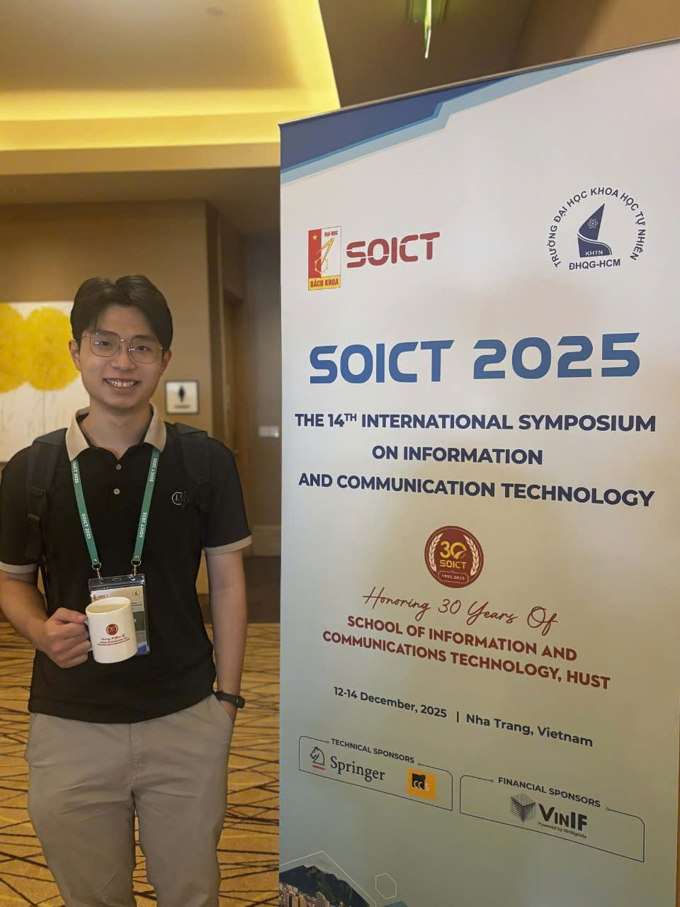

I build intelligent systems across 3D vision, multimodal understanding, and Agentic AI. My work focuses on how models can ground language in geometry and time, and how agentic pipelines can autonomously reason over complex, real-world environments.

I am a third-year Computer Science undergraduate in the IT Talent Programme at the University of Science, VNU-HCM (GPA: 3.94/4.0). My core academic research lies at the intersection of 3D vision and multimodal understanding.
In my research, I explore 3D Gaussian Splatting as a representation for structured scene understanding-moving beyond photorealistic reconstruction to representations that encode objects, semantics, and spatial relationships.
On the applied engineering side, I build Agentic AI systems that leverage multimodal models to autonomously query, reason, and orchestrate tools over complex media. My broader goal is to build intelligent systems that are not only visually accurate but actively queryable, interpretable, and useful for downstream reasoning.
Saigon AI Hub (SAIH), Applied AI Lab
Selected for one of 10 inaugural research groups globally funded by Google Labs’ AI Futures Fund. Leading research on multimodal sport reasoning and analysis, building models that integrate visual, temporal, and language signals to understand complex scenarios in video.
Software Engineering Lab (SELab), HCMUS
Research student at the Software Engineering Lab (SELab), HCMUS, supervised by Prof. Minh Triet Tran. My research spans 3D vision, multimodal understanding, video reasoning, and vision-language retrieval, with contributions to multiple projects and publications across ECCV, ICMV, ICMR, and SOICT.
An agentic multimodal media system that goes beyond retrieval to group, query, and reason over personal image libraries through natural-language interaction. Florence-2 is deployed as a self-hosted inference service, decoupled from the agent logic.
View on GitHub Best Project · Smart Software Innovation Program (SSIP) 2026, VNG GroupAn agent-based system for structured visual question answering over broadcast soccer video. Served the underlying language model with vLLM for low-latency inference; achieved top 5 in the SoccerNet 2026 VQA Track. The resulting work was published at ICMV 2026.
Published at ICMV 2026Built a large-scale article data pipeline and an end-to-end multimodal system combining LLM content understanding with diffusion synthesis. Released NewsGen, a dataset of 6,000 labeled thumbnail images; ranked top 3 worldwide.
Course projects in applied software engineering.
Course projects · Awarded 10/10A full-stack link-in-bio platform with real-time username validation, customizable theming, and an LLM-powered bio writer, deployed end-to-end within one semester.
View on GitHub Course project · Awarded 10/10An Android application integrating Gemini and ML Kit for on-device food recognition from the camera and real-time nutritional analysis.
View on GitHub Course project · Awarded 10/10AI City Workshop @ ECCV 2026
Extended Abstract, ICONIP 2026
Proc. ICMV 2026 (CORE C)
Proc. ICMV 2026 (CORE C)
ACM LSC Workshop @ ICMR 2026 (CORE B)
Proc. SOICT 2025
CEUR Workshop Proceedings · MediaEval 2025
Computers & Graphics (Elsevier, Q2), Vol. 132
International sports AI benchmark (2026). Surpassed baseline by over 21%.
Tri-modal explainable deepfake forensics benchmark (CORE A*, 2026).
Nationally selective scholarship for exceptional academic merit (2023, 2026).
Top 2% of the faculty (2025); Top 3% of the faculty (2024).